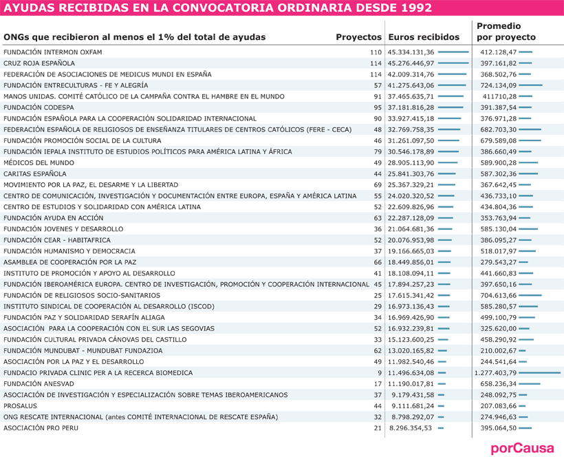
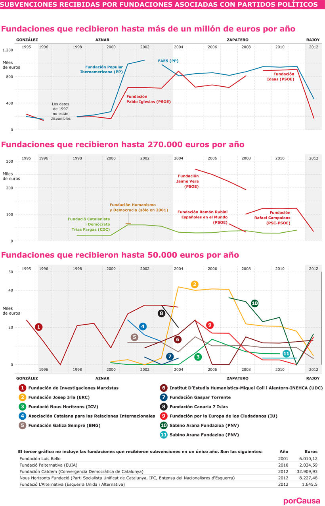

Una parte importante de ese dinero fue a parar a organizaciones privadas y públicas que desarrollan actividades humanitarias en decenas de países del mundo, incluyendo los programas de sensibilización e incidencia pública que realizan en España. Existe una información muy limitada sobre la pertinencia, la evolución y el impacto de estos recursos.
porCausa ha recopilado la base de datos completa de las subvenciones recibidas por las ONG y fundaciones a través de Convocatorias Ordinarias (desde 1992); ayudas canalizadas a través de la Convocatoria Abierta y Permanente (desde 2002); subvenciones destinadas a las fundaciones y asociaciones dependientes de partidos políticos (desde 1995); y las denominadas subvenciones “nominativas” a organizaciones de carácter público. Esta información constituye una herramienta imprescindible para analizar el destino de recursos esenciales en la lucha contra la pobreza.
El propósito de este primer proyecto de porCausa es ofrecer a la sociedad un debate informado sobre los programas de cooperación realizados por las ONG, asociaciones y fundaciones, uno de los actores más relevantes en la estrategia española en este campo.
* Esta cifra corresponde a dólares constantes de 2011, con un tipo de cambio aplicado de 1,30 dólares por euro.


